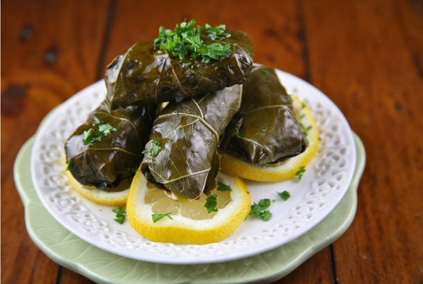

Stuffed Grape Leaves

Description
Stuffed grape leaves also known as dolmas or dolmades, are one of the most iconic Mediterranean dishes.
In this particular recipe we are going to be stuffing our grape leaves with a ground beef and rice mixture.
To add to the flavor we will be adding allspice and cumin, some staple spices for any kitchen. Then to finish
things off we will be adding fresh parsley, dill, and mint. They will then be cooked in a lemony broth.
Stuffed grape leaves are a great way to get people together in the kitchen to cook and eat.
Ingredients
- 1 16-oz. jar of grape leaves in brine
- 1 1/2 cups of short grained rice, soaked in water for 15 minutes then drained
- Extra virgin olive oil
- 1 large yellow onion, finely chopped
- 12 oz lean ground beef
- Kosher salt
- Black pepper
- 1 tsp allspice
- 1/2 tsp cumin
- 1/2 cup each chopped fresh parsley, mint, and dill
- 1 to 2 tomatoes sliced in rounds
- about 4 cups of low-sodium chicken broth or water
- juice of 2 lemons
Steps
Prepare the leaves
- If you are using jarred grape leaves remove them from the jar and rinse the leaves, then you
can discard the brine. Rinse the leaves well and leave in a colander to drain. (Later on we
will remove the stems.)(See notes if you are using fresh grape leaves.)
Prepare the stuffing
- Soak rice in plenty of water for about 15 to 20 minutes or until you are able to break a grain
of rice easily. Drain well.
- While rice is soaking, cook the meat. Heat 1 tablespoon of extra virgin olive oil in
a large skillet. Add onions and cook briefly for about 2 minutes, tossing until translucent.
Add meat and cook until fully browned, tossing occasionally. Drain excess fat, then season with
kosher salt, pepper, and spices. Toss to combine, then remove from heat and set aside to cool.
- In a mixing bowl, combine the meat, rice, and fresh herbs. Season lightly with kosher salt.
Add a generous drizzle of extra virgin olive oil, then mix until everything is well-incorporated.
Stuff Grape Leaves, Assemble, and Cook
- Prepare a heavy cooking pot and lightly brush the bottom with extra virgin olive olive
Arrange a few grape leaves in the bottom and to avoid scorching make sure there are three layers
of leaves. Then top with sliced tomatoes.
- Working with one leaf at a time, place one grape leaf on a cutting board with the textured/rough
side facing you. Place 1 heaping teaspoon of the filling in the center of the leaf.
Then fold the sides of the leaf over the filling and roll (think of making spring rolls). Repeat
with remaining leaves until you are out of stuffing.
- Neatly arrange the prepared rolls in a row and seam side down in your pot. Then place a small inverted
plate on top. Boil the broth or water and pour over the grape leaves until you reach the top layer
and somewhat cover it.
- Now cover the pot with the lid and cook over medium heat for 30 minutes until the liquid has been
absorbed. Uncover and remove the plate then pour the juice of 2 lemons. Place the lid back on the
pot and cook for an additional 30-45 minutes or until fully cooked.